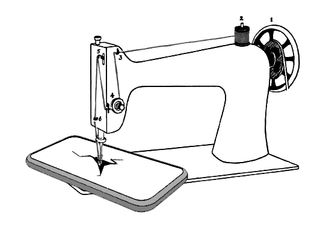

10 years anniversary edition! 2023 (Yshield HNG80)

About / Workshop / Dates / Pouch / FAQ / Links / Press / Contact

KILLYOURPHONE.COM is an open workshop format. Participants are invited to make their own signal blocking phone pouch. In the pouch the phone can't send or receive any signals. It is dead! This workshop was run for the first time at the Chaos Communication Congress in Hamburg end of 2013. You can run this workshop yourself at your place with friends and neighbors, at the school, community center etc. (Art institutions and museums please get in touch.) Protect your privacy! Discuss surveillance and learn how to sew!
I am a Berlin based artist and I like to make projects about the Internet, computers and their physical impact on society and every day life. For a prior similar project see also Silver Cell phone pouch 2004
10 years anniversary edition! 2023 (Yshield HNG80)
Run your own KILLYOURPHONE.COM workshop! (Art institutions and museums please get in touch. The Killyouphone workshop is an artwork.)
KILLYOURPHONE.COM workshop at 30C3: 30th Chaos Communication Congress, December 27-30, 2013 Hamburg, https://events.ccc.de/congress/2013
"Open workshop to passively block your phone from sending and receiving. Make your own signal blocking Faraday pouch! How to wrap your phone to kill any wireless connection? How to pack your phone so it can't record any sound? Which materials work best? Where to get them? What are the cheapest and fastest solutions? We have fabrics, tools and a sewing machine. Feel free to join! Bring your own stuff!"

Killyourphone at #30C3, 2013, flickr picture set

Killyourphone at re:publica conference Berlin, May 2014, flickr picture set
The pouch has a very simple design. Of course you are invited make something more fashionable but this version is very easy to make and it works. Make it any size you want! (Tablet etc) To make it fit most common current smart phones I usually make the pouch 11 x 24 cm. IMPORTANT: What ever you do make sure you fold the material on all sides to make sure the radio waves can't get through!!
Tutorial for a 11 x 24 cm pouch (updated measurements 2023, bigger phones ;):

Why can't I just turn off my phone?
Yes, of course you should but nowadays we can't really say any more if a phone is actually turned off when you power it down. The alarm still works, right? Also, you can't take out the battery any more of most current devices. Read this to get an idea what s going on.
Does the pouch work?
Yes, it does! It works very well for a whole bunch of frequencies depending on which material you got. If you want to make sure it is also strong against close up wifi signals I recommend sewing a double layer pouch. Test it!
How does it work?
The material is a copper or silver coated fabric or fleece especially developed for electromagnetic protection. As a pouch it forms a Faraday cage which blocks all electromagnetic radiation (radio waves). Usually it is used in military or aviation . When you sit next to a strong radar antenna you better want to isolate the wall to not get grilled.
Does the material also shield RFID chips in passports?
Yes, it does. Since the RFID chips are usually powered passively the signal strength is much lower. RFID is in general much easier to kill than GSM and other signals.
Where to get the material?
Search for RF Shielding fleece, RF Shielding fabric, Electromagnetic Field Shielding Fabrics or Metalized Fabrics ! You will find these and similar materials in stores which are into electromagnetic protection. The fleeces usually have the best absorbing properties but fabrics work as well. Everything with 99,999% damping for 70dB and higher (for a broad range of frequencies 1-5Ghz) should work very well. There are many different online shops offering these products. Some examples below. If you find a good supplier in your country please let me know, I ll add links below... Example shops:
Do I need a special thread to sew a blocking pouch?
No, you don't. But it is important to fold the fabric on all sides do no radio waves can escape the Faraday cage.
Can I run my own KILLYOUPHONE workshop?
Yes sure! Run your own signal blocking pouches workshop in your neighborhood, club, festival etc...& thx for linking to this website! (Art institutions and museums please get in touch. The Killyouphone workshop is an artwork.)
What about isolating your phone acoustically so it can't record any sound?
Once a third party has installed a trojan on your phone it is capable to run any software on your phone. When your phone is in the blocking pouch it is not connected to any network but in case of a trojan it still could record sound (i.e. a conversation) and send it later. To prevent this the phone needed to be isolated acoustically. A simple solutions for this is a bottling jar or more effectively double plastic pipes used in plumming.

Attention!: Some of these design proposal might be problematic in terms of shielding. ie. the zipper would need extra cover etc.
More awesome projects:
Products of the shelf (I haven t tested any.) :

A project by Aram Bartholl 2014 - 2024
contact: workshop at killyourphone com

Make your own pouch today!!